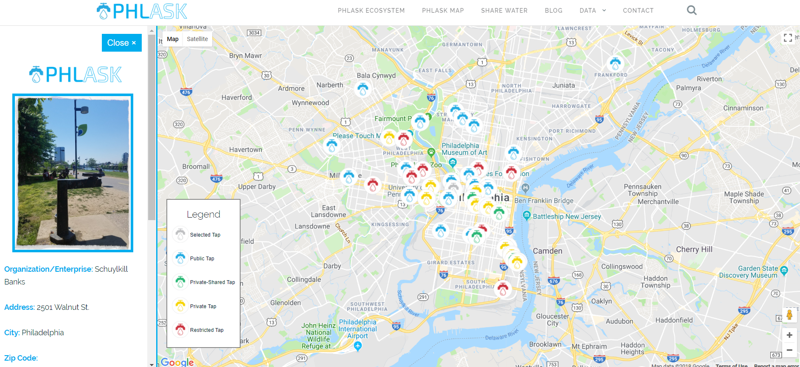

PROJECTS
Phlask
See the Project
|
See the Github Repo
Phlask is an open-source, non-profit project for finding and sharing water sources within the Philadelphia area. The project has the dual intention of challenging the social norm of having to purchase water when there is a public or private water tap present and of providing a technological platform for the public to locate and share known sources of water.
My work with Phlask has been on the page with the web map. Since I joined the Phlask project I’ve been responsible for creating and maintaining our database structure, writing the code behind the web map, and attending meeting and meetups to help recruit resources and personnel for the Phlask project. The web map is written in HTML, CSS, and JavaScript and uses the Google Maps JavaScript and Firebase APIs. The Phlask website is a WordPress site so the web map html document was modified to run within the PHP driven WordPress environment.

Python RDP Algorithm
See the Github Repo
An implementation of the Ramer–Douglas–Peucker (RDP) algorithm, an
iterative end-point fit algorithm, in Python. This script will simply a linestring or a polygon in
the form of a shapefile to varying degrees based on the epsilon value passed to the algorithm. The
original line or polygon is then plotted along with the result of running the algorithm on the shape
to show the effect the algorithm had.
I wrote this script as the final project of a GIS focused
Python course I took my senior year at Temple University. This project involved translating the RDP
algorithm from pseudocode to python, handling file io with the fiona library, handling plotting with
matplotlib's pyplot library, and writing the supporting PEP compliant code to make all the pieces work
together.
Python Geocoder
See the Github Repo
A Python geocoding script that accepts a .csv file as input and geocodes
addresses using the Google Maps Geocoding API based on fields in the .csv that comprise addresses.
Output is written into the same directory as the input file with "_geocoded" appended to the filename
and four new fields added: Full Address, Latitude, Longitude, and Geocode Quality.
Python Web Scraper
See the Github Repo
This script contains a series of common web scraping patterns I've
encountered while scraping store locations in my current position as a GIS Analyst. Because many store
directory pages have a similar HTML structure I combined the common scraping patterns I use into one file
to allow me to assemble scrapers more quickly.
All of these scraping patterns rely on the BeautifulSoup
scraping library. This script has to be modified to be used for a particular site and serves
as a template to build directory web scrapers. The build scraper function allows you
to chain types of page scrapes as you move throughout a directory and is one of the two
functions called when the script is run. Once you've reached the final page of a directory
the data_extract_scrape function can be used to select specific HTMl elements on this page
or pages and store their values in variables. These values are then appended to a list of which
is later used to write to a .csv file. The last function of importance is the csv_write function
which writes to a specified file pathway the information scraped.